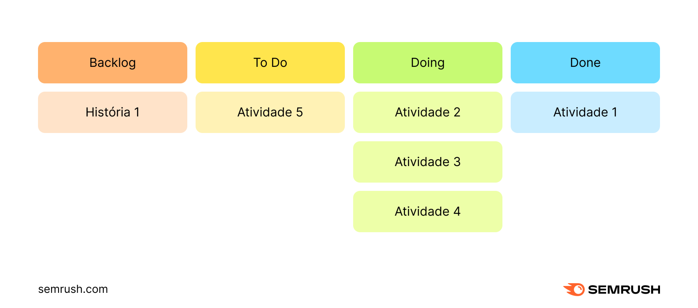

O Scrum é uma metodologia ágil de trabalho que busca proporcionar o máximo de eficiência estratégica para uma equipe a partir de ciclos curtos em que todo o trabalho é revisitado para garantir que tudo funcione perfeitamente.
Em um mercado tão competitivo, é muito importante ter eficiência no seu trabalho. Seja em um e-commerce, seja em uma agência de marketing digital: os projetos precisam funcionar, os profissionais devem saber suas tarefas e, mais importante, as entregas devem respeitar prazos. Por isso, a metodologia Scrum pode ajudar. Uma das metodologias ágeis mais conhecidas do mercado, o Scrum busca otimizar o funcionamento de uma equipe a partir da maior integração entre os diferentes profissionais envolvidos e o uso mais inteligente do tempo de trabalho de cada um. Mas como essa metodologia funciona na prática? Para ajudar a responder essa pergunta, preparamos um conteúdo com tudo o que você precisa saber sobre Scrum: o objetivo dessa metodologia, os benefícios, em quais situações pode ser aplicado, como funciona na prática e muito mais.
O Scrum é uma metodologia ágil baseada em sprints, os ciclos de produção de um projeto, garantindo revisão e aperfeiçoamento constantes para que o resultado seja sempre o melhor possível. O trabalho colaborativo é uma necessidade dentro da aplicação dessa estratégia. Um dos frameworks mais populares, o motivo é muito simples: sua praticidade. A partir de ciclos de produção em um tempo menor, gestores conseguem acompanhar a evolução de um projeto gradualmente. Assim, com revisões de pouco em pouco tempo, o trabalho final entregue tende a ser muito melhor. Na prática, os erros vão diminuir, já que cada entrega é reduzida, evitando um desgaste do profissional e aumentando o nível de atenção de todos os envolvidos. Além disso, o Scrum é uma metodologia bastante colaborativa, em que é preciso que todos se sintam parte do projeto e saibam as suas responsabilidades.
Uma metodologia ágil é um conceito de gerenciamento de projetos que promove mais dinamismo ao processo. Os gestores conseguem ter uma visão mais simples e prática das tarefas realizadas pela sua equipe, deixando de lado os processos lentos de entrega, otimizando todas as etapas produtivas. Essas metodologias são baseadas em ciclos curtos de trabalho, em que cada entrega é revisada de tempos em tempos sem que nada seja deixado de lado por muito tempo. Na prática, portanto, as metodologias ágeis proporcionam a criação de fluxos de trabalho mais simples e eficientes para todos. As muitas metodologias que existem — como o próprio Scrum, Kanban ou Lean — seguem o mesmo princípio que é detalhado no Manifesto Ágil, uma documentação que direciona as prioridades desses métodos de trabalho:
Tudo o que está à esquerda nessa lista acima deve ser visto como prioridade. Não significa que os outros elementos não tenham a sua importância, mas é preciso priorizar esses elementos específicos, o que vai garantir todo esse dinamismo e melhor funcionamento dos fluxos de trabalho.
O objetivo do Scrum é fornecer uma visão mais ampla e dinâmica para gestores e profissionais envolvidos em um projeto. Deixando de lado métodos lentos e burocráticos de trabalho, esse conceito busca proporcionar mais agilidade para que as entregas sejam feitas em menos tempo e com melhores resultados. Tudo isso acontece por conta da maior participação de todos os profissionais que estão envolvidos. Líderes e liderados passam a atuar com maior integração, contribuindo para que as suas decisões sejam as mais benéficas possíveis para a entrega final de um resultado positivo.
O Scrum proporciona muitos benefícios para a gestão de projetos e os principais são os seguintes:
O Scrum pode até parecer uma metodologia complexa de ser implementada, mas após algumas análises sobre o tema, qualquer profissional vai entender o seu funcionamento. Os ciclos e as responsabilidades também são fáceis de serem compreendidas, o que permite a sua utilização em diferentes equipes.
A partir da implementação dos ciclos mais rápidos de trabalho, a tendência é que os erros sejam reduzidos ao longo desses processos. E isso é um benefício válido para qualquer negócio, independentemente do seu segmento de atuação, prioridade ou tamanho da equipe, ganhando tempo valioso.
Outro aspecto importante que o Scrum entrega para quem aplica essa metodologia é a possibilidade de realizar entregas mais completas dentro de cada projeto. Com a revisão pontual do que está sendo feito, a tendência é otimizar os resultados finais esperados ao final de cada etapa.
Além disso, o Scrum também facilita a gestão de grandes equipes, permitindo que cada profissional envolvido em um projeto saiba exatamente o que precisa ser entregue e em qual prazo. A compreensão das responsabilidades ajuda a construir fluxos de trabalho mais eficientes e garantir a motivação de todos os participantes.
O Scrum é aplicável em qualquer empresa, projeto ou equipe. Por mais que, tradicionalmente, seja mais popular em equipes da área de tecnologia e desenvolvimento, a metodologia se provou tão eficiente que outros setores também estão utilizando-o, como marketing ou vendas. Afinal, o seu principal objetivo é fornecer maior eficiência estratégica para a gestão de projetos e é exatamente isso que gestores dos mais diferentes segmentos estão buscando. O interessante aqui é entender quais são as necessidades da sua equipe e, a partir disso, definir a melhor aplicação do Scrum. Como vamos mostrar a seguir, existem vários elementos importantes na metodologia, mas eles não são fixos, ou seja, podem ser adaptados seguindo as necessidades da sua equipe ou área de atuação. Essa flexibilidade promove tudo o que é necessário para que o Scrum seja aplicado em qualquer projeto.
Mas, na prática, como funciona o Scrum? Existem alguns itens que não podem ser deixados de lado quando se fala na metodologia, confira!

Dentro dessa metodologia, existem três responsabilidades que são definidas de acordo com os seguintes termos:
Como falamos , a metodologia é muito flexível e a sua empresa não precisa, necessariamente, seguir todas essas atribuições. Em alguns casos, um mesmo profissional pode atuar como Scrum Master e Product Owner, sempre variando de acordo com o fluxo de trabalho.
Existem alguns outros termos que também devem ser compreendidos para facilitar o entendimento no dia a dia do uso dessa metodologia.
Backlog: é a fonte de trabalho de toda a equipe envolvida naquele projeto, onde geralmente consta toda a documentação necessária para que os profissionais saibam quais são as suas tarefas e responsabilidades;
Sprint backlog: uma lista visível de trabalho em que todos os envolvidos saibam quais são as próximas execuções que precisam ser realizadas;
Incrementos: são pequenas tarefas que vão ser utilizadas para complementar algumas das sprints.
Uma parte marcante da metodologia é a sua série de eventos que acontecem ao longo de uma sprint, são alguns dos termos necessários no dia a dia de trabalho.
Sprint: são os ciclos curtos de trabalho, que podem durar uma semana, 15 dias ou mesmo um mês, sempre de acordo com as necessidades e demandas da equipe e do projeto;
Planejamento de Sprint: é o momento em que todos os profissionais se reúnem para definirem quais são os trabalhos que precisam ser feitos durante a próxima sprint;
Daily Scrum: em alguns casos, pode ser interessante realizar encontros diários com toda a equipe para verificar o que está acontecendo, eventuais desafios e problemas para serem resolvidos;
Sprint Review: após a conclusão de uma sprint, um evento importante é revisitar tudo o que foi feito, para entender o que funcionou, o que precisa melhorar e o que ficou de demanda para a próxima sprint.
A flexibilidade desse modelo também permite que a sua equipe siga apenas com os eventos que julga necessários. Em algumas situações, pode não fazer tanto sentido, por exemplo, ter um encontro diário entre os profissionais. Tudo depende das necessidades e demandas do projeto. Para quem está precisando otimizar a gestão da sua equipe, o Scrum é uma metodologia que deve ser considerada para o seu funcionamento. É a partir da sua aplicação que todos os profissionais envolvidos em um projeto conseguem ter maior eficiência no dia a dia de trabalho e, consequentemente, melhores resultados. Achou o scrum interessante, mas quer conhecer outras metodologias para a gestão dos seus projetos? Sem problemas: continue em nosso blog e confira um conteúdo completo sobre e como usar a metodologia de gestão no dia a dia do negócio!
Inicio